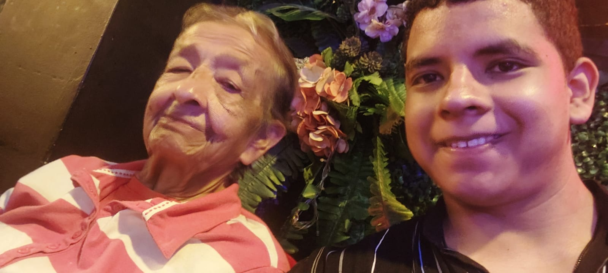
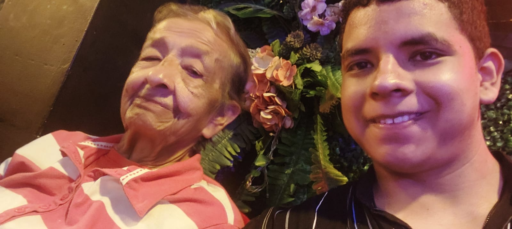

Hoy quiero aprovechar el Día de las Madres para recordarte lo mucho que significas para mí. Sé que no siempre te lo digo con palabras,
pero en mi corazón no hay día que pase sin agradecer por tenerte en mi vida.
Eres más que una abuela.
Eres ese abrazo que calma todo, esa voz que me llena de paz, esa mirada que me entiende sin que yo diga nada.
Me has dado tanto sin pedir nada a cambio… tu tiempo, tu cariño, tu paciencia infinita. Y eso, chayo, es amor del más
puro.
Tengo tantos recuerdos contigo que se me hace un nudo en la garganta solo de pensarlos. Esos momentos simples, como cuando me preparabas
masitas de arina de trigo con tanto amor, o cuando te sientas a contarme historias de cuando eras más joven... esos recuerdos son como
tesoros que llevo conmigo siempre.
Gracias por enseñarme con tu ejemplo, por ser fuerte sin dejar de ser dulce, por cuidarnos a todos con ese corazón enorme que no te cabe
en el pecho. Gracias por estar, por ser tú.
Hoy solo quiero que sepas cuánto te amo, cuánto te admiro y cuánto te necesito. Ojalá pudiera devolverte aunque sea un poquito de todo
lo que me has dado. Este día es tuyo, pero en realidad, todos los días deberían celebrarte.
Con todo mi amor,Tu nieto que te adora.
 
